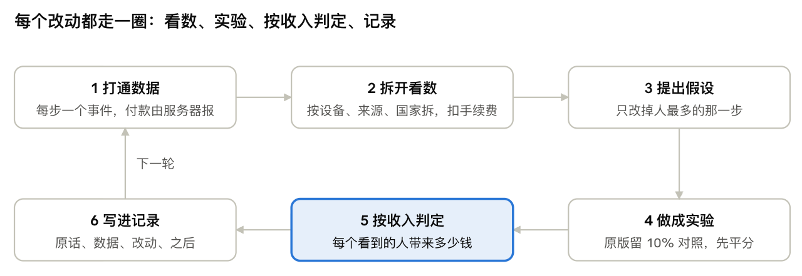
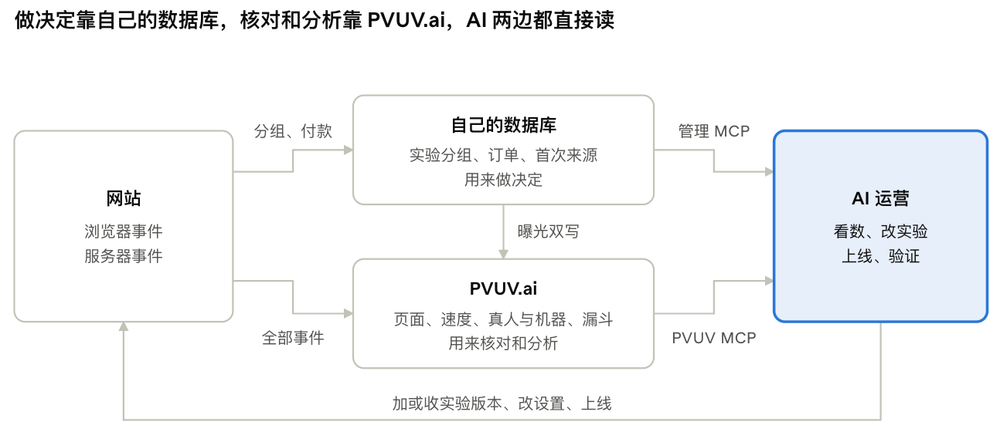

这是 rapduo.ai（AI 说唱视频小站）过去 5 周由AI 主导运营的方法：把每个改动都做成实验，按“每个访客带来多少钱”判定，结果写进决策记录，AI自己看数、自己改、自己验证，老板只拍价格和花钱的事。下面 9 步照着做，每步都有做法和原理。
原理总览

精细化运营就是把这一圈转得又快又准。AI让它转得快:看数、改代码、上线、实测都由它做；实验和对照组让它转得准；记录让下一圈不重复犯错。下面每一步对应图里的一环或一种保障.
为什么自建实验系统，再配PVUV.ai
我们没有用现成的实验平台，而是把实验系统写进了自己的代码和数据库，统计分析交给 PVUV.ai。目的只有三个：更灵活、更可控、AI 更容易读写数据。

实验为什么自建
| 我们的需求 | 自建怎么做到 |
|---|---|
| 价格实验不能被绕过 | 分组在服务器上做，付款时按访客的版本再核一遍价格.只在页面上切换显示，有人就能直接买到低价（我们真遇到过） |
| 按“扣费后每个访客带来多少钱”判定 | 曝光、订单、首次来源都在同一个数据库里，一个查询就能关联，还能按设备、来源、市场拆开 |
| 规则随时可改 | 10％ 对照、最少样本、统计窗口都是自己的代码。发现慢实验凑不够人数，当天就改完上线 |
| 页面不闪、不变慢 | 服务器渲染时就确定版本，只输出这一版的HTML，不加载额外的实验脚本，也不影响SEO |
| AI能自己动手 | 加版本、收版本、看分组结果都是我们管理接口里的一个工具，AI 直接调用 |
代价也要说清楚：统计代码要自己写、自己测，写错了也得自己发现。我们的做法是让 AI写、用单元测试锁住结果，再拿第二份独立的数据来核对，这就是 PVUV.ai的位置.
统计为什么用 PVUV.ai
自己的数据库管“做决定”的数据（分组、订单、归因），不擅长的事交给PVUV.ai：
- 浏览器侧的数据：页面报告、真实用户的网页速度（首字节、首次绘制等）。我们发现美国用户首字节要等 2 秒多，就是从这里看到的。
- 真人和机器分开：默认只算真实访客，机器人和爬虫单独归类。服务器把 AI助手和搜索引擎爬虫的访问也报过去，能看到ChatGPT读了哪些页.
- 服务器事件：注册、付款、续费、退款由服务器带着访客 ID 上报，和浏览器事件拼成同一个人的完整路径，付款不会因为用户关掉标签页而丢。
- 实验曝光双写:每次曝光同时作为标准的 exposure 事件发给PVUV.ai，同一个实验就有两份独立的数据，自己的统计代码写错了能对出来.
- AI直接读：PVUV.ai 有 MCP 接口，AI 不用导出表格就能查漏斗、按维度拆分、看网页速度。我们的4 个转化漏斗就是AI自己建的，老板没动过后台。
接入做法
- 页面加 PVUV.ai 脚本，登录后用账号 ID调一次 identify，把匿名访客和账号连起来。
- 在后台建一个只能写入的ingest token，放进服务器配置。服务器在后台异步上报事件，失败也不影响用户请求。
- 付款事件带上订单号作为事件ID，重发也只算一次；金额统一换成美元。
- 自家和测试账号在上报前就过滤掉。
- 把 PVUV.ai的 MCP接到AI 的工作环境里，让它自己建漏斗.
第1步 打通数据
先定一条从“来了”到“付了钱”的漏斗，每一步都打一个事件，付款由服务器上报。数据不全，后面所有判断都会错。
做法
- 列出漏斗步骤，每步一个事件名。我们的是：到达 → 页面加载 → 传照片 → 点生成 → 注册 → 看到付款框 → 点购买 → 开始付款 → 付款成功 → 下载。
- 每个访客发一个一年有效的cookie 作为访客 ID，注册或登录时把它和账号绑定。
- 第一次到达时记下来源：referrer、utm、广告点击 ID（gclid等）、落地页、国家。以后算“这个人从哪来”，一律用第一次来源。
- 付款、续费、退款由服务器在支付回调里上报,不靠浏览器。
- 自家账号和测试账号（我们用
e2e+前缀的邮箱）在上报时就排除掉。 - 机器人单独分类：自报身份的爬虫、不执行脚本的请求、同一UA 短时间大量访问，都不进漏斗分母。
原理
- 浏览器端统计会漏掉付款：用户在 Stripe 页面付完直接关掉标签页，浏览器就不会回来报。所以付款一定要由服务器上报.
- 首次来源决定渠道判断。一个人可能ChatGPT 进来、第二天直接打开网址付款，按最后来源算就会把功劳错记给“直接访问”。
- 分母要干净。我们最近7天 2810次到达里，只有 686次真正加载了页面，其余大多是机器人和探测请求。拿到达数做分母，转化率会显得低约4 倍，而且波动全是噪声。
第2步 让AI能看数、能动手
给 AI一组管理工具（我们做成 MCP接口），让它自己查漏斗、查订单、改设置、回工单。AI自己能看数，才能自己发现问题、自己验证改动。
做法
- 只读工具先行：漏斗汇总（可按天数、来源、落地页、国家、设备拆）、订单列表、用户详情和行为轨迹、实验总览、运营快照（今天对比昨天同时段、渲染失败、供应商余额）.
- 写工具只开必要的：改设置、加或停实验版本、回工单、发邮件、退款。每个工具只是对业务代码的薄包装,绝不开放裸 SQL、改角色、读明文密钥。
- 再接上统计工具的MCP（我们用 PVUV.ai，原因见上一节），用来看网页速度、页面报告、漏斗。漏斗让 AI自己建。
- 用一个管理员API Key调用，Key放在环境变量里，不写进代码。
原理
- 如果 AI只能写代码、不能看数，就只是个执行者，每个判断都要你喂数据。能看数之后，它会自己问“为什么电脑端 0单”然后去拆。
- 边界靠工具本身，不靠提示词。不给的能力它就做不到,而不是“请你别做”。退款这类动钱的操作，我们的环境还会再拦一道，要老板点头。
第 3 步 规则手册、授权表和决策记录
把规矩写进仓库里的规则文件（AGENTS.md / CLAUDE.md），把每个决定写进决策记录。AI 没有长期记忆，这两个文件就是它的记忆。
做法
- 写一张授权表,说清哪些事 AI 自己做、哪些要问。我们的版本：
- 每个决定一条记录，编号D1、D2……最新的在最上面。每条四部分：决定（谁定的，原话）、数据、改动（commit 和设置）、之后数据怎么变的.
- 老板的原话照抄进记录，不转述。
- 长期规矩写进规则文件，比如“任何版本不给 100% 流量”“每次部署后必须验证线上版本”。
| 事情 | 谁决定 |
|---|---|
| 价格、新产品、真实广告预算、删除客户数据、法律页面 | 先问老板 |
| 文案、布局、新热点页、实验版本的增减、小的可回滚改动 | AI做完再汇报 |
| 工单、退还额度 | AI自己处理 |
| 退款 | 每天最多自主1笔，全额；超过政策的直接婉拒 |
原理
- 授权不清楚，AI要么什么都问（老板累）,要么什么都自己做（老板慌）。按“能不能回滚、花不花钱”划线最稳。
- 上下文会被压缩、会话会重开，只有写进仓库的东西不会丢。下一个会话的AI读一遍记录就知道为什么当初那样做。
- “之后”那一栏最重要：它逼着你回头看结果，我们很多“无效”的结论都是回头看才发现的。
第 4步 实验系统
文案、布局、优惠、价格，每个改动都做成实验版本，和原版同时跑，按“每个看到的访客带来多少钱”判定。这是整套方法里最值钱的一步。
几个概念
- 实验层：漏斗里一个会变的位置，比如“付款框主推哪个套餐”。各层互相独立，一个访客在每层各抽一个版本。
- 版本：一条记录，内容是一段 JSON，代码读它决定显示什么。原版（baseline）内容为空，就是现在的网站。
- 曝光：访客真正看到了这个版本的那一刻。只算看到的人，不算分到但没看到的人。
做法
- 分组用访客 cookie的哈希，同一个人每次来都看到同一版本。分组在服务器上做,页面只拿结果。
- 用户真的看到变化时，记一条曝光事件.
- 判定指标用钱：曝光后48 小时内该访客付了多少钱，除以曝光人数。不用点击率，也不只用付款率。
- 每组先凑够最少人数（我们设 150–400），在此之前严格平分流量。
- 够了之后每6小时自动调一次流量（Thompson采样）：赢的分更多，几乎不可能赢的自动收掉。
- 原版永远留 10% 对照，不会被收掉。
- 价格和任何浏览器能伪造的东西，由服务器按访客的版本定价，付款时再核一遍。否则有人可以直接请求低价商品（我们真发生过这个漏洞）。
- 统计窗口从实验开始算起，最多120天.
原理
- 为什么按钱判定：付款框的两个版本，付款人数几乎一样（354人里 47 个付款，对358 人里 44个），但扣费后每人带来 $1.95 对 $1.34，差在客单价。只看付款率会以为打平。
- 为什么要对照组：流量本身每天在变。没有同时跑的原版，你分不清是改动的效果还是那天来的人不一样。
- 为什么要最少样本：前几十个人里多一个大单就能翻盘。我们欧元实验的领先就主要来自一位 $96的客户。
- 为什么不直接换赢家：自动调配把大部分流量给当前更好的版本，又给落后的留一点机会，实验期间少亏钱。
- “胜出概率 97%”是什么：按现有数据，这个版本是所有版本里最好的那个的概率。它不是“确定赢了”，样本小时会反复。
第 5 步 怎么看数
总数只告诉你“有问题”，拆开看才知道问题在哪。我们每次都按设备、来源、国家拆，并且算扣掉手续费后的钱。
做法
- 先看漏斗哪一步掉得最多，只优化那一步。
- 同一个数按三个维度拆：设备（iPhone / 安卓 / Mac / Windows）、来源（ChatGPT / Google / 直接 / 其他）、市场（美国 / 欧元区 / 低收入国家 / 其他）。
- 收入一律扣掉支付手续费。Stripe 我们按2.9％ + 30 美分估，美国以外的卡加1.5%，非美元收款再加1％。
- 拿三个不同长度的窗口（14 / 30 / 45天）对照看。三个窗口结论一致才算数，只有一个窗口支持就是波动。
- 今天和昨天对比时，比同一时段，不比整天。
我们拆出来的东西
| 拆法 | 发现 | 改变了什么 |
|---|---|---|
| 按设备 | 40天里手机4131 人加载页面、付款 148单；电脑 2388 人只有14单 | 不再给电脑端降价，改做 Google Pay 和扫码转手机 |
| 按来源 | 40天里ChatGPT 来的每 100人3.4单，Google 2.0单 | 优先做 AI 助手会引用的内容 |
| 按设备 × 价格 | iPhone 在 $8.99 时每人 $4.27（样本小：19人里 5单）；电脑和安卓在任何价格都接近 0 | 不买不是因为贵，是付款体验差 |
| 按流量来源拆“直接访问” | 913个直接访问访客里，约240 个是自动程序或非页面请求，能确认是真人浏览器的只有约170 个 | 漏斗口径重做,数据干净了 |
原理
- 整体平均会把不同人群的差异抵消掉。“转化率 1％”可能是手机 3% 加上电脑 0%，要解决的是电脑端的问题，而不是“提升转化”。
- 小单价产品里，30 美分的固定手续费对 $6.99 是4％，对 $29是 1%。不扣手续费会高估低价的价值。
- 每个小组人太少时不要单独开实验。我们的做法是全体一起测，结果按组拆开读，某组数据足够了再给它单独的方案。
第 6 步 自动报警和自动恢复
网站定时检查付款有没有异常下降,一旦下降就报警、叫醒AI，AI 按手册查原因，是自己的改动就直接回滚。
做法
- 定时把最近 6 小时的付款数，和过去 7 天同样 6 个小时的平均比。
- 按泊松分布算“这么少的概率”,平时这 6 小时至少有 4单、且概率低于2％ 才报警：发到企业微信群，同时叫醒AI。
- AI的排查顺序：先找漏斗哪一步丢了人 → 再对这段时间内的上线和实验改动 → 再用测试账号走一遍付款。
- 跟某个改动对得上，就不问老板直接回滚，再汇报。对不上就不动,继续监控。
原理
- 我们吃过亏：10月 9 日付款掉了约 20小时才发现，因为当时是整天对比，而当时一天只有 10单左右，半天没单看起来也正常。
- 同时段对比消掉了小时级的规律（美国白天多、半夜少），泊松概率解决了“单量小时一小时没单很正常”的问题。
- 回滚权下放给AI，是因为每多等一小时都在丢钱，而回滚自己的改动风险很低。10月11 日报警 2 次，都查明不是改动引起的，没有回滚。局限：单量太小时它不会响。现在一天两三单，6小时平均不到4单，要拉长窗口才有用。
第 7步 找流量：热点页面
盯住Google Trends里和自己产品相关的爆发词，一出现就做一个专门的页面.但要有心理准备：热点页带来流量容易，带来付款很难。
做法
- 每天看Google Trends 里核心词（我们是“ai rap”“ai trend”）的相关查询,重点看标着 Breakout和涨幅几百到几千百分比的词。
- 只做和产品相关的。老板的原则是“热点都要围绕ai rap”，这样来的人才可能付钱.
- 先搞清楚用户到底想要什么：去看原视频和别人的模板页，弄清场景、动作、几个人。我们一开始做 Bulin 47 是两个人，后来发现用户要的是一张照片做进原视频场景，又重做了一遍。
- 做3 个演示视频，都是这个热点自己的不同玩法（朋友、情侣、祖孙）,不放别的热点。
- 逐帧检查演示和提示词里有没有真实品牌。我们发现过一台红色键盘连续两次都生成出真品牌 logo，一个房间直接照抄了原节目的办公室，两处都改掉了。
- 词带品牌名时，URL 和标题用描述性的说法，只在FAQ 里说一次“很多人叫它 X，我们与X 无关”。
- 上线后加到sitemap和llms.txt，用IndexNow通知搜索引擎，然后用测试账号在线上真的生成一次.
- 一周后看这个页面的到访、传照片、付款。
原理和局限
- 热点页吃的是搜索量刚爆发、还没什么竞争的窗口期，所以要快。老板定的规则是“还在涨的热点不用问我，直接做”。
- 但流量不等于付款。Hotel Lobby主页面40 天 1043 个访客、成交22 单；Bulin 47页286 个访客、0 单。来看热闹的人和想给自己做一个的人是两类人。
- 所以热点页要当作低成本试错：做得快、做得多，一周后只给真能带来付款的继续投入。
- 比热点页更稳的是AI 助手渠道。40天里 ChatGPT 来的人每 100 人 3.4单，Google 2.0单，要写它愿意引用的内容：直接回答问题的步骤、诚实的对比。
第8步 客服政策化
工单交给 AI处理，但先把退款政策和自主额度定死。AI按政策判断,不按客户语气判断。
做法
- 网站上有一份公开的退款政策。我们的:生成失败自动不扣费；积分包 7天内可退没用掉的部分；订阅 7 天内且当期额度没用过可退。
- AI处理工单前先查：付了什么、什么时候付的、生成了几次、额度还剩多少、有没有重复扣费.
- 在政策内的，每天最多自主退1 笔；第2 笔当天要问老板。
- 不在政策内的（额度用完了、超过 7天）直接婉拒：说清订阅已取消、不会再扣费、视频仍可下载。
- 用客户的语言回复，工单里回一次、邮件再发一次，然后关单.
- 同一类问题出现第二次，就去改产品。比如有客户以为能得到原版歌曲，我们就在生成按钮上方加了“歌曲是 AI原创”的提示。
原理
- AI天生容易顺着客户走.我自己就犯过：一位额度用完、付款超过一个月的客户要退款，我建议全退，老板一句“额度用完了，为什么要退款？”点醒了我。所以要把政策写死.
- 每日额度是个保险丝：就算 AI 判断错，一天也只会错一笔。
第 9步 上线纪律
AI 改得快，所以每次上线都要走同一套检查,而且最后一步必须是在真实网站上像用户一样试一遍。
做法
- 单元测试、类型检查、生产构建，三项全过.
- 提交前做一次安全扫描：有没有泄露密钥、有没有注入和越权。
- 推送后等部署完成，访问
/api/version，确认线上跑的就是这次的提交。 - 用测试账号在线上真的走一遍：真的生成、真的打开付款页、真的发邮件。用无头浏览器截图，确认没有页面报错.
- 还没法真实试的功能，先以“关闭”状态上线，只对测试账号打开，试过了再全量。Apple Pay和Google Pay都是这样上的。
原理
- 测试和构建只证明代码能跑，不证明用户能用。我们有过一次欧元定价全部测试通过，但因为大小写不一致，真实的欧元区访客 2 小时里一个都没进入实验，是上线后在线上用真实国家参数检查时才发现的。
- 推送成功不等于部署成功。我们遇到过同一个提交先推到分支、只触发了预览构建，生产环境没更新。验证版本号是唯一可靠的方法。
我们的实验结果
最赚钱的改动都在付款环节；界面大改和首页推荐都输了。下表是每个看到该版本的访客带来的钱（毛收入，统计到 11-11）。
| 开始 | 测什么 | 改后 | 原版 | 结论 |
|---|---|---|---|---|
| 10-29 | 单首四档价 $6.99 / $7.99 / $8.99 / $9.99（每组约 110 人） | $6.99和 $8.99 各 $0.85 | $9.99 $0.39，$7.99 $0.15 | 待定，每组满200 人后定价 |
| 10-11 | 单首 $6.99 对 $9.99 | $0.74 | $0.62 | 有效，$6.99胜出 |
| 10-11 | 离开时让用户自己出价（$4.99–$9.99） | 266 人看到，22人付款，$1.15 | — | 有效，已全量 |
| 10-11 | 挽留弹窗触发范围扩大 | $1.48 | $1.27 | 领先，已拿 79％ 流量 |
| 10-11 | 手机端App式界面 | $0.32 | $0.53 | 无效，已收掉 |
| 10-11 | 首页顶部“新热点”推荐条 | $0.15 | $0.26 | 无效，已收掉 |
| 10-10 | 欧元区显示欧元价 | $0.77 | $0.48 | 待定，差距主要来自一笔 $96 的大单 |
| 10-09 | 付款框说明改成“可一次付清,也可按月” | $1.56 | $0.93 | 有效，已拿 90％ 流量 |
| 10-09 | 付款框主推月付 vs 按来源主推 | 主推月付 $1.92 | 按来源 $1.40 | 有效，11-11 收掉“按来源” |
| 10-01 | 选单首时问“要不要改成3 首” | $5.94 | $5.84 | 打平，继续跑 |
| 10-01 | Google来的新用户送免费预览 | 不送：401 人13单 | 送：373 人 6 单 | 不送更好，10-04关掉预览 |
Apple Pay没有做实验（老板决定直接上）：10-10 以来iPhone上 107 个开始付款的人里100 个付成功。
定价策略和价格实验
六周的价格实验得出三个结论：单首不该定 $9.99；付款框主推月付比主推套餐赚得多；电脑和安卓不买不是因为贵。各人群的单独定价计划在11月 21 日定。
现在的价格表
| 产品 | 价格 | 内容 | 每首约 |
|---|---|---|---|
| 单首 | $9.99（实验中：$6.99 / $7.99 / $8.99） | 10积分,1首 | $9.99 |
| 3首包 | $19.99 | 3 首 | $6.66 |
| Duo Pack | $29 | 50积分，约 5 首 | $5.80 |
| Crew / Studio / Label | $99 / $199 / $499 | 约35 / 90 / 300 首 | $2.83 / $2.21 / $1.66 |
| 月付Basic / Pro / Studio | $29.90 / $49.90 / $99.90 | 每月约 10 / 30 / 80 首 | $2.99 / $1.66 / $1.25 |
| 年付 Basic / Pro / Studio | $100 / $500 / $600 | 每年约40 / 400 / 600 首 | $2.50 / $1.25 / $1.00 |
欧元区一半访客看到的是欧元价（单首 €8.99）。积分包永不过期,订阅积分当期有效。
定价原则
- 买得越多，每首越便宜，单首最贵。花同样的钱，套餐不能比订阅划算，把人往订阅上引。
- 实验只降不涨：任何版本都不能收得比价格表贵。
- 价格由服务器定:访客分到哪个价,付款时就只能按哪个价买.
- 按“扣费后每个看到价格的访客带来多少钱”判定，不看付款率。降价几乎总能提高付款率，但不一定多赚钱.
- 热点页在测价期间不写具体价格，免得和访客分到的价格不一致.
价格实验时间线（最新的在上）
| 日期 | 做了什么 | 数据 | 结论 |
|---|---|---|---|
| 11-09 | 把价格实验按设备、来源、市场拆开，扣掉Stripe 手续费重算 | iPhone在 $8.99时每人 $4.27，$6.99时 $3.12，$9.99时 $0.43；Mac、Windows、安卓在所有价格都接近0 | iPhone 用户接受 $8.99；电脑和安卓的问题不在价格，去做Google Pay |
| 10-29 | 单首四档价 $6.99 / $7.99 / $8.99 / $9.99 同时测，各 25% 流量，固定不自动调 | 每组约110 人，扣费后每人：$8.99 $0.91，$6.99 $0.85，$9.99 $0.34，$7.99 $0.15 | 待定。$8.99和 $6.99领先,每组满 200 人后定价 |
| 10-18 | “自己出价”的最低价从 $2.99提到 $4.99（老板：“2.99 太低了”） | 3天里5 人按了付款，出价中位数 $2.99,只有1人付了 | 生效。按钮改为 $4.99 / $5.99 / $7.99 / $9.99 |
| 10-15 | $6.99的流量从20％ 提到 50％，$4.99 和 $2.99 收掉 | $9.99 280人13 单；$6.99 18人 3单;$4.99 20人1单；$2.99 10 人0 单 | 更低不一定更好。最终 30 天：$6.99 每人 $0.74，$9.99 $0.62 |
| 10-11 | 单首降价实验：20％ 流量分成 $6.99 / $4.99 / $2.99 | 见上一行 | $6.99胜出，引出10-29 的四档测试 |
| 10-11 | 离开时不再固定给 $9.99，让从没付过钱的人自己出价 | 10-12 老板定为全部符合条件的人都看到。至今266 人看到，22人付款，每人 $1.15 | 有效。给犹豫的人一个台阶 |
| 10-10 | 欧元区一半访客看欧元价，付款也用欧元 | 欧元组每人 $0.77，美元组 $0.48 | 待定。差距主要来自一笔 $96 的大单 |
| 10-02 | 低收入国家先展示便宜的选项 | 原版 95人 3单，先展示便宜116人 1 单 | 没用。这些市场人太少，暂不单独定价 |
| 10-01 | 选单首时问“要不要加 $10改成 3 首” | 41 天：问的193人每人 $5.94，不问的179人 $5.84 | 打平，继续跑 |
| 10-01 | 付款框主推哪个:月付 / Duo Pack / 3 首包，各三分之一 | 10-08 把领先的月付全量后每人从 $2.13 掉到 $1.27，10-09恢复平分；加入“按来源”版本；30天扣费后月付 $1.95,按来源 $1.34 | 主推月付胜出（11-11） |
| 10-01 | Google来的新用户先送一个免费预览 | 不送401人 13 单，送 373 人 6单；568个预览只有 14 个付费解锁 | 免费不带来付费.10-04 关掉 |
| 09-30 | $29 Duo Pack重新上架 | 当天上架前卖了10 个月付，上架后变成 10个Duo Pack、月付0个 | 便宜的包会抢走订阅，引出 10-01 的主推实验 |
| 09-30 | $9.99 单首放回第一位 | 366 个访客3.28% 付款,去掉单首时只有 1.43% | 入门价不能缺 |
| 09-29 | 去掉 $9.99 单首，套餐从 $99 起，订阅打头 | 每个访客 $0.28，上线初期是 $0.44 | 门槛太高，第二天撤回 |
| 09-29 | 解锁单首的价格：$2.99 / $4.99 / $6.99 / $9.99 | 单首报价55人7单，套餐列表 24人 1 单；但几乎所有买家都只买一首 | 老板决定把单首移出列表、让套餐打头，想提高客单价；实验收掉 |
学到的
- 一定要有入门价。去掉 $9.99 单首那天，付款率从 2.19% 掉到 1.43％。大多数人第一次只想做一首。
- 便宜的包会抢走订阅。主推什么，就卖什么。所以要测“主推哪个”，而不只是测价格。
- 价格和收入不是直线关系。$7.99 比 $6.99 和 $8.99 都差，样本还小，但提醒我们不要从两个点推导中间价。
- 免费不等于拉新。送预览的人付款反而少一半,还要花生成成本。
- 同一个价格对不同的人价值差很多。iPhone 用户的每人收入是平均值的 4 倍多，全站一个价格是在给一部分人打折、对另一部分人太贵。
- 小单价要扣手续费算。每笔30美分的固定费用，对 $6.99 是4.3％,对 $29 只有 1%。
下一步（11月 21日）
四档价每组满约 200 人后，按人群读结果。哪个人群自己的数据足够，就给它单独的价格，先从iPhone 开始，每个人群仍保留对照组。我们不开18 个小实验（3个市场 × 3个来源 × 2 种设备 × 多个价格），因为一个月约80个买家，分到每个格子里不到2个，什么也读不出来。
踩过的坑
| 时间 | 犯的错 | 后果 | 教训 |
|---|---|---|---|
| 11-11 | 说实验“会自动结束”,其实统计只看30 天，慢实验永远凑不够人数 | 两个实验一直五五开 | 统计窗口从实验开始算；定判定门槛前先算流量够不够 |
| 11-10 | 建议给额度用完、超7 天的客户退款 | 被老板拦下 | 按政策判断，不按客户语气 |
| 11-10 | 建议扩大免费预览，忘了 10-04 已经测过 | 当时送预览的组373 人6 单，不送的401 人13单，老板已关掉 | 提建议前先翻决策记录和实验历史 |
| 10-31 | 生成的演示里出现真实品牌 logo、照抄了原节目场景 | 赶在上线前发现 | 提示词写“无logo”不够，要换掉容易生成品牌的物件,并逐帧检查 |
| 10-11 | 跟着热点做页面，默认它们会赚钱 | Bulin 47 页 40天 286 访客0单 | 热点页是试错，一周后只保留能带来付款的 |
| 10-11 | 低价商品只在页面上控制谁能看到 | 任何人直接请求都能买 $2.99单首 | 价格必须由服务器按访客的实验版本核对 |
| 10-10 | 欧元实验的货币代码大小写比较错了 | 真实访客 2小时没进入实验 | 上线后用真实参数实测，不只用测试账号 |
| 10-09 | 付款监控只按整天对比 | 付款掉了约20小时才发现 | 改成每30 分钟同时段对比 + 自动报警 |
| 10-08 | 把领先的付款框版本直接全量，关掉了对照 | 每人收入从 $2.13 掉到 $1.27，第二天付款大降 | 任何版本不给 100%，原版永远留10% 对照 |
可直接复制的模板
下面五段拷贝到自己的项目里，改掉方括号里的内容就能用。它们默认你和我们一样：做决定的数据在自己的数据库，统计分析用PVUV.ai，两边都接到 AI 的 MCP 上。
1. 规则文件（放进AGENTS.md或 CLAUDE.md）
## 运营规则
- 你是 [网站名] 的运营助手，用中文简短回复。
- 先问老板：价格、新产品、真实广告预算、删除客户数据、法律页面。
- 自己做、做完汇报：文案、布局、新热点页、实验版本增减、小的可回滚改动。
- 工单自己处理；按公开的退款政策判断，每天最多自主全退 1 笔。
- 每个文案、布局、优惠、价格改动都做成实验，按每个曝光访客的扣费后收入判定。
- 任何版本不给 100% 流量，原版（或指定的对照版本）至少留 10%。
- 数据分两处看：实验分组、订单、归因看自己的数据库（管理 MCP）；页面、网页速度、真人与机器人、漏斗、AI 爬虫和 AI 来源看 PVUV.ai（PVUV MCP）。统计口径默认只算真实访客。
- 注册、付款、续费、退款由服务器带访客 ID 上报 PVUV.ai，用订单号做事件 ID 去重；自家和测试账号不报。
- 实验曝光同时作为 exposure 事件发给 PVUV.ai；判定前对一遍两边的曝光人数，差太多先查统计代码。
- 转化漏斗自己在 PVUV.ai 里建好，不要让老板建。
- 付款比过去 7 天同时段明显下降：查哪一步、对改动，是我们的改动就直接回滚，再汇报。
- 上线前：测试 + 类型检查 + 构建 + 安全扫描。上线后：确认线上版本号，用测试账号在线上真的走一遍。
- 每个决定记在 docs/decisions.md，最新的在上面。2. 决策记录（每条一个）
## D12 · 2026-11-11 · [一句话说做了什么]
- 决定：[谁定的]，原话："[老板的原话]"
- 数据：[发现了什么，带数字和时间窗口；注明来自自己的数据库还是 PVUV.ai]
- 改动：[commit、改了哪个设置]
- 之后：[什么时候看、看什么；结果出来后回来补写，两边数字对得上再下结论]3. 实验层定义（参考字段）
{
"key": "paywall",
"title": "付款框主推哪个套餐",
"success": ["paid"],
"revenue": true,
"windowHours": 48,
"minExposures": 400,
"floor": 0.1,
"arms": [
{ "key": "baseline", "content": {} },
{ "key": "plan-first", "content": { "featured": "basic_monthly" } }
]
}4. 每日检查提示词（可设成定时任务）
看一下今天的数据：
1. 付款单数和金额（扣除退款），和昨天同时段比。
2. 漏斗哪一步掉得最多，按设备和来源拆开（用 PVUV.ai 的漏斗，只算真实访客）。
3. PVUV.ai：各落地页的真实访客、首页和热门页的网页速度有没有变差、有没有新的 AI 助手来源或 AI 爬虫在读我们的页。
4. 每个实验：各版本曝光人数、每人收入、是否已够判定；曝光人数和 PVUV.ai 的 exposure 对一下。
5. 未处理的工单、生成失败、供应商余额。
6. 上周上线的改动，记录里“之后”一栏该补的补上。
用中文简短汇报，只说变化和要我决定的事。5. 服务器上报PVUV.ai（TypeScript，和我们线上用的一样）
// 注册、付款、退款、实验曝光都走这一个函数。
// token 用 PVUV.ai 后台建的“只能写入”的 ingest token，放环境变量。
const SITE = process.env.PVUV_SITE!;
const TOKEN = process.env.PVUV_INGEST_TOKEN!;
export async function pvuvEvent(event: {
name: string; // signup / purchase / renewal / refund / exposure
id?: string; // 去重：同一个 id 只算一次，比如 purchase-<订单号>
user_id?: string;
visitor_id?: string; // 页面脚本写的 _pv_id cookie
revenue?: number; // 主单位：29.00，不是 2900
currency?: string;
props?: Record<string, string | number | boolean>;
}) {
try {
const res = await fetch(`https://api.pvuv.ai/v1/sites/${SITE}/events`, {
method: 'POST',
headers: {
authorization: `Bearer ${TOKEN}`,
'content-type': 'application/json',
},
body: JSON.stringify({ events: [event] }),
signal: AbortSignal.timeout(3000),
});
return res.ok;
} catch {
return false; // 上报失败不能影响用户请求
}
}
// 例：付款回调里
await pvuvEvent({
name: 'purchase',
id: `purchase-${order.orderNo}`,
user_id: order.userId,
revenue: order.amountCents / 100,
currency: 'USD',
props: { product: order.productId },
});
// 例：服务器决定了实验版本（比如价格）之后
await pvuvEvent({
name: 'exposure',
id: `exp-${visitorId}-${layer}-${arm}-${today}`, // 每人每天每版本一次
visitor_id: visitorId,
props: { experiment: layer, variant: arm },
});